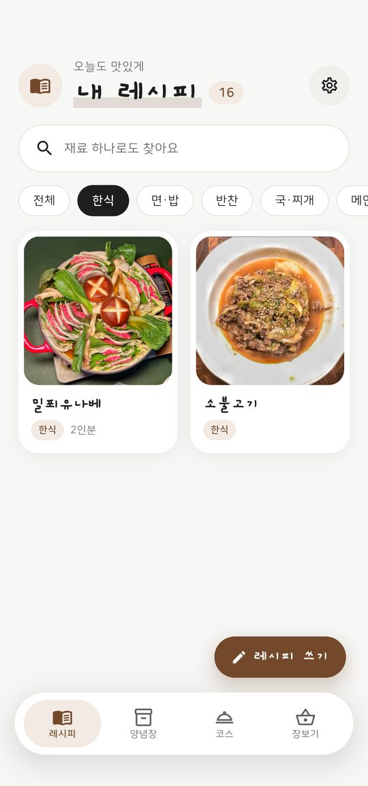
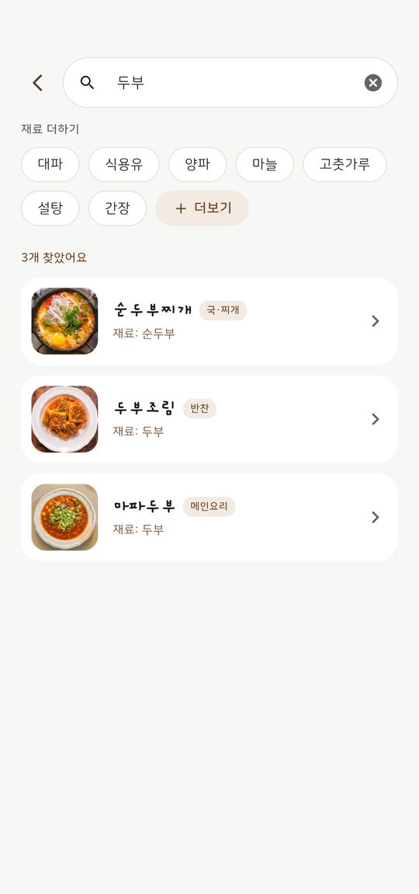
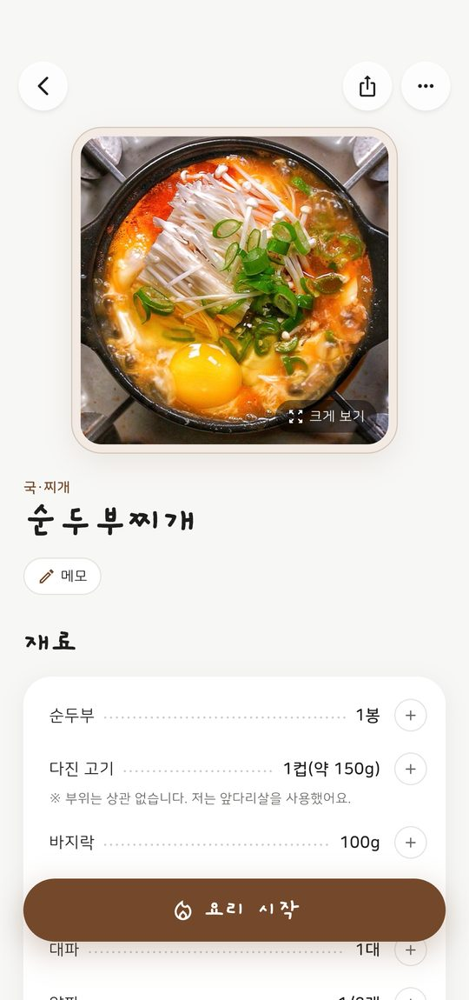
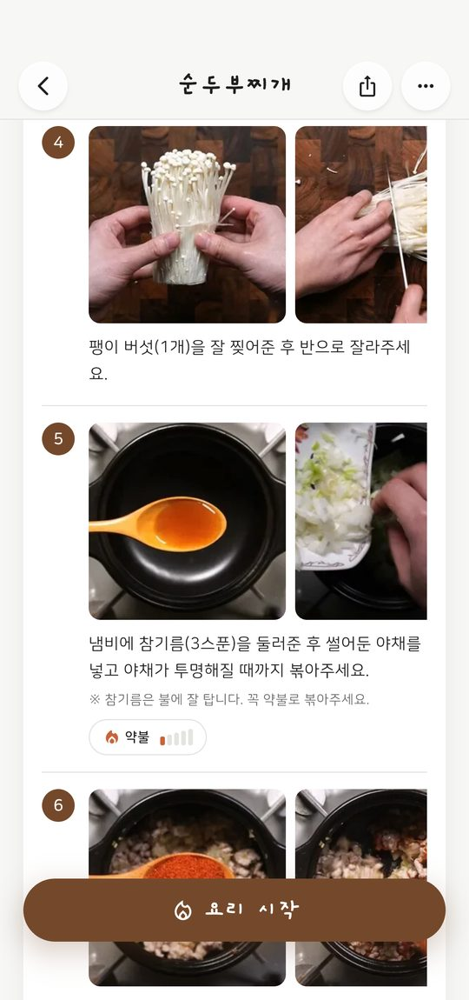
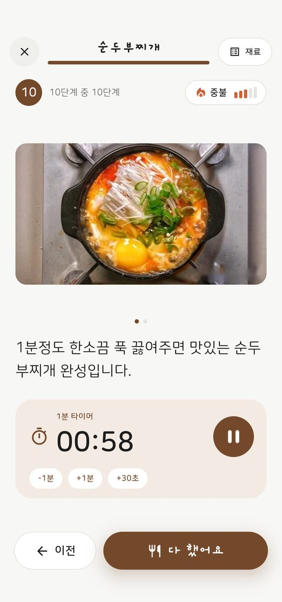
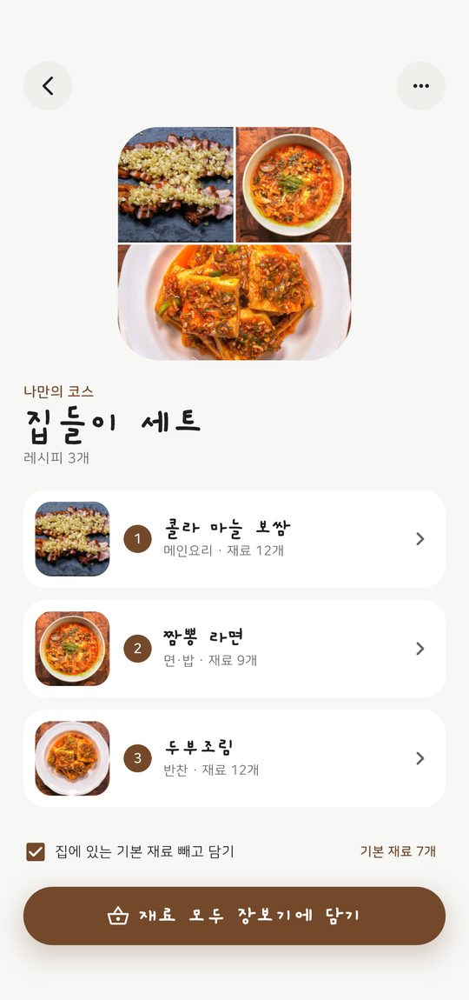
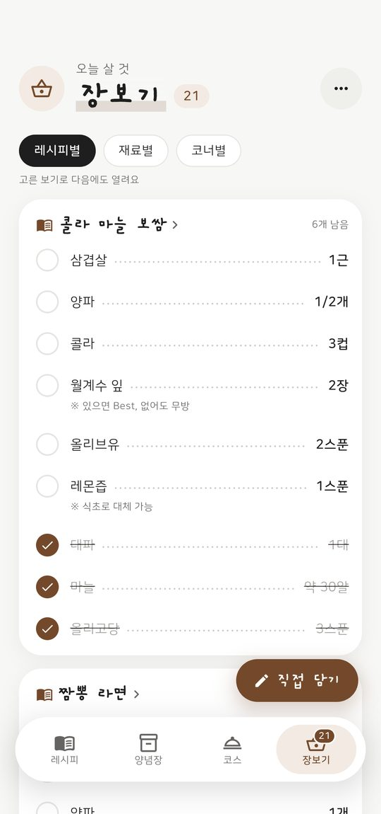
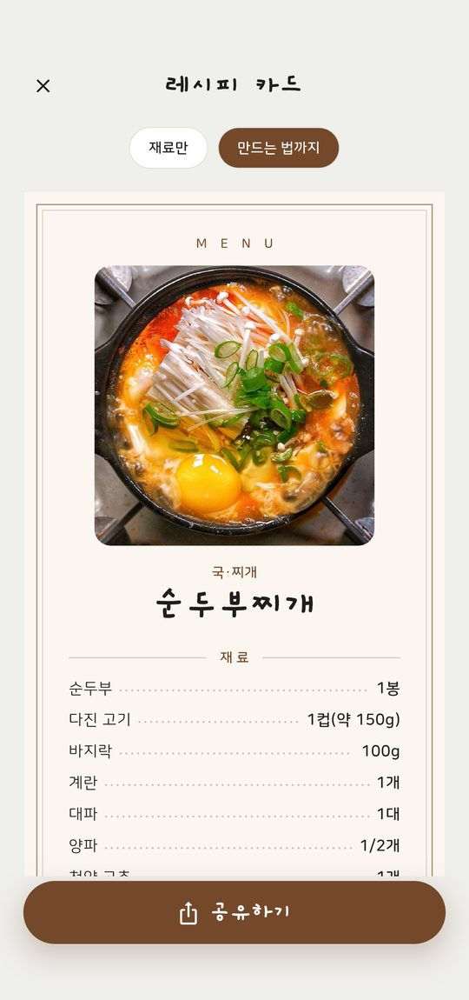

내가 만든 요리들, 한눈에
찍어 둔 요리 사진이 그대로 레시피 표지가 돼요. 한식·반찬·국·찌개처럼 분류를 직접 만들고, 원하는 분류만 골라 볼 수 있어요.
- 사진 위주 목록으로 보기 좋게
- 분류는 내 마음대로 만들고 순서도 바꾸기
- 홈 화면 위젯에 내 레시피가 번갈아 보여요

냉장고 재료로 바로 찾기
"두부"만 쳐도 두부가 들어간 레시피가 모두 나와요. 재료를 여러 개 고르면 그 재료가 다 들어간 요리만 보여 줘요.
- 재료 여러 개로 찾기
- 초성(ㄷㅂ)으로도 찾기
- 달걀↔계란처럼 같은 말도 함께 찾기

재료부터 만드는 법까지, 사진과 함께
재료는 이름과 양을 나눠 깔끔하게. 만드는 법은 단계마다 사진을 붙이고, 불 세기와 참고할 점도 적어 둘 수 있어요.
- 양념장은 비율 막대로 한눈에, 따로 모아 다른 레시피에 불러오기
- 인분을 바꾸면 재료 양도 자동으로 계산
- 단계마다 사진 여러 장, 불 세기(약불·중불·센불)


요리할 땐 큰 화면으로, 타이머는 알아서
요리 모드는 한 단계씩 큰 글씨로 보여 줘요. "10분 끓여요"처럼 시간이 적힌 단계에는 타이머가 바로 준비돼요.
- 화면이 꺼져도, 무음이어도 알람이 울려요
- 아이폰은 잠금 화면에서 남은 시간을 보고 멈추기
- 요리하는 동안 화면이 꺼지지 않아요

나만의 코스도 짜 보고, 장보기까지 한 번에
집들이·명절처럼 여러 요리를 하나의 코스로 묶어요. 버튼 하나로 코스의 재료를 모두 장보기 목록에 담아요.
- 레시피별·재료별·마트 코너별로 보기
- 집에 있는 기본 재료(소금·설탕 등)는 빼고 담기
- 장 보면서 하나씩 체크


나만의 레시피를 카드로 만들어 간단하게 보내기
레시피를 예쁜 카드 한 장으로 만들어 카카오톡으로 보내요. 받는 사람은 앱이 없어도 사진처럼 바로 볼 수 있어요.
- 재료만 / 만드는 법까지 골라서 카드 만들기
- 포크폴리오끼리는 레시피 파일로 주고받기
- 전체 백업 파일로 저장하고 되살리기

내 레시피는 안전하게
자주 묻는 질문
무료인가요?
네, 무료예요. 화면 아래에 글자 한 줄 광고가 나와요. 로그인과 사진 보관도 무료예요.
로그인을 꼭 해야 하나요?
아니요. 로그인하지 않아도 모든 기능을 쓸 수 있어요. 로그인하면 레시피가 서버에 보관돼서 폰을 바꾸거나 앱을 다시 설치해도 그대로 돌아와요.
아이폰과 갤럭시 둘 다 되나요?
네. 아이폰(iOS 17 이상)과 안드로이드 폰(Android 7.0 이상)에서 쓸 수 있어요. 같은 계정으로 로그인하면 두 폰에서 같은 레시피를 볼 수 있어요.
레시피를 받는 사람도 앱이 있어야 하나요?
레시피 카드는 사진처럼 보내져서 앱이 없어도 볼 수 있어요. 레시피 파일로 받으면 포크폴리오에 그대로 담을 수 있어요.
타이머가 화면을 끄면 멈추나요?
아니요. 화면을 끄거나 다른 앱을 써도 시간이 되면 알람이 울려요. 아이폰은 잠금 화면에서도 남은 시간이 보여요.
문의는 어디로 하나요?
help@forkfolio.kr로 보내 주세요.
포크폴리오 받기
무료로 받아 지금 바로 내 레시피를 모아 보세요.